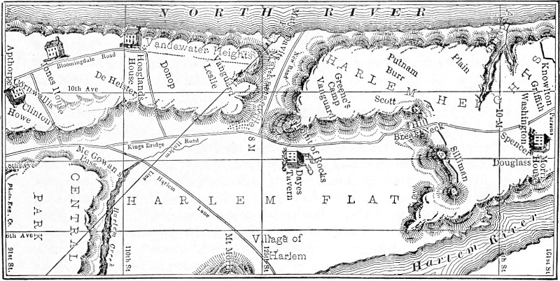

Title: The battle of Harlem Heights
Author: M.D. Thomas Addis Emmet
Release date: June 2, 2026 [eBook #78798]
Language: English
Original publication: The Magazine of History with Notes and Queries, 1906
Other information and formats: www.gutenberg.org/ebooks/78798
Credits: Charlene Taylor, Andrew Scott and the Online Distributed Proofreading Team at https://www.pgdp.net (This file was produced from images generously made available by The Internet Archive)
BY
THOMAS ADDIS EMMET, M.D.
REPRINTED FROM
THE MAGAZINE OF HISTORY
WITH NOTES AND QUERIES
September, 1906
[Pg 1]
[Dr. Emmet’s article was written in reply to the following article which appeared some time ago in the New York Evening Post. The whereabouts of the Richards letter, quoted from, we have been unable to ascertain.—Ed].
Since the publication of Prof. H. P. Johnston’s monograph on the battle of Harlem Heights, not more than one or two letters or documents have come to light to be added to the very complete list of authorities given in the appendix. One of these which has recently been brought to notice is interesting and important as confirming certain views advanced by Professor Johnston respecting the location of the battlefield and other particulars of the action. It is in the form of an extract from the diary of a Revolutionary officer, Lieut. Samuel Richards of a Connecticut regiment, who, after describing the retreat from Long Island in August, 1776, continues his narrative as follows:
We then marched and took possession of the heights of Harlem and immediately flung up lines for our defence.... We were employed the succeeding night (September 15, 1776) in throwing up a slight entrenchment on the brow of the hill at Harlem Heights in full expectation of being attacked by the enemy in the morning. When the sun arose I saw the enemy in the plain below us, at the distance of about a mile, forming in a line. By accounts afterwards, their number was said to exceed twenty thousand, and they indeed made a brilliant display by the reflection of the sun’s rays on their arms.
The sharp action which took place that day under Col. Knowlton is so well detailed by the historian, I need not repeat it. The enemy sent a detachment of about five thousand along the bank of the North River, which our people attacked with spirit and about an equal number, and drove them back to their main body. The loss on our side was about thirty killed and sixty or seventy wounded. The loss to the enemy must have been more than that, as we repulsed them after a warm fire of three-quarters of an hour. Here I first saw Lieut. Munro; he had volunteered to go to the attack on our right under the command of Col. Knowlton.
The next day I had a mournful duty assigned to me—the command of a covering party over the fatigue men who buried the dead which had fallen in the action the previous day. I placed myself and party on a small eminence so as to see the men at their work, and to discover the enemy should they approach to interrupt them. There were thirty-three bodies found on the field; they were drawn [Pg 2]to a large hole which was prepared for the purpose and buried together. One body of a fine-limbed young man had been brought into the camp with a bullet hole in the breast near the heart. I was struck with reflections on the force of habit to see those fatigue men performing this duty with as little apparent concern as they would have performed any duty.
The diary, though written some years after the close of the war, furnishes a narrative which is apparently based upon an accurate recollection of the events described. Lieut. Richards supports Professor Johnston’s assertion, already corroborated by a mass of evidence, that the battle was fought on the western side and slope of Morningside Heights. These authorities, and the maps published in the history, trace the advance of the British from what is now One Hundred and Seventh Street along the bank of the North River to the “buckwheat field” lying between Broadway and Riverside Drive, One Hundred and Sixteenth Street and One Hundred and Twentieth Street, as they now exist, where they were met by Col. Knowlton’s Rangers and where the battle occurred.
The statement of Lieut. Richards that the American loss was about thirty killed confirms the estimate made by Professor Johnston, while the third statement as to the burial of those killed furnishes a new item to be added to the account of the battle, and lends increased interest to an historic site. The plan of the battle and Lieut. Richards’s description when studied in connection with the natural topography of the Heights leave no doubt that either upon or immediately to the west of the Columbia University grounds lies the burial place of the men who fell “in the first battle of the Revolution in which the American troops faced and routed the British.”
In the Post of Feb. 10th, an editorial on the battle of Harlem Heights interested me extremely, as the locality is there described as though there existed no longer a doubt as to the exact place where the battle was fought. I am aware that this view is held by many, but beyond the fact that the present site of Columbia University must necessarily be nearer the locality where the battle was fought, it has no greater claim, I believe, to that honor than has Union Square, or any other locality. I have given no thought to the subject for many years and I am writing away from home, without a book of reference, but fortunately I have retained a recollection of the details. I am not actuated by a spirit of [Pg 3]controversy in raising this issue, nor do I intend to take any further part in discussion. I simply wish to offer a protest, in consequence of my knowledge that the history of our country is being constantly perverted and misstated.
There exists no question that the battle of Harlem was fought, either to the north or the south of the western portion of Harlem flats; that the Americans occupied certain heights; and that the assault of the English was made by one body and that the larger portion, from the plain below along these heights; at the same time a smaller body gained the top of these heights by ascending a ravine from the Hudson river bank at some distance from the main line of attack. The whole question then relates to the locality of Harlem Heights, and at this late date, in the absence of positive proof, the locality must either continue to remain in doubt, or must be decided by circumstantial evidence, which is often the most reliable. Before presenting the evidence on which I propose to base my argument it will be necessary to make a digression.
Grant’s tomb occupies the site of Mt. Alto, the country place of my uncle, the late Mr. Bache McEvers, with whom for many years I spent a portion of every summer. As a boy I became as familiar with every foot of this neighborhood as I am now with the sidewalk in front of my Madison Avenue city residence, where I have lived for nearly fifty years. I generally accompanied my uncle when he took his Sunday afternoon walks and through his knowledge I became familiar with the history and traditions of this neighborhood, and of Westchester. On one occasion, during the summer, I think of 1838, I had pointed out to me the site of the battle of Harlem Heights, with the ravine on the North river, or west side, where a portion of the British troops came up to make the attack, and beyond that the road on Breakneck Hill, to the east side, down which the English were driven after being routed. The surrounding country was then under cultivation and divided up in small fields with scarcely any trees standing, but along the river bank and on the brow of the heights to the eastward. This locality and ravine was near the site and possibly forms a portion of the present Trinity Cemetery. I was also told that the main part of the battle was fought below, to the south, and I went over the ground about the locality of the present Convent of the Sacred Heart, which neighborhood was too hilly to be termed “a rolling country.” From my earliest knowledge in connection with this battle until recent years, no doubt seems to have existed as to where [Pg 4]the battle was fought and the accepted belief was the fight took place on the ground I have described. The fact that the attack was made at distant points and covered quite an area would explain, I should think, the difficulty and the vague manner in which the battle is described or located by those who possessed a contemporaneous knowledge of the locality of the Harlem Heights.
Along the south side of Harlem Commons or Flats, there extended a precipitous ridge of rock and débris, from the Hudson river at Grant’s tomb to the East river at Hell gate. At the time of the Revolution the chief exit from the city of New York to the north, was by way of McGowan’s Pass, and in addition there were several footpaths to reach the plain below. I have always heard that the Bloomingdale road was not extended along the hill by Grant’s tomb and Claremount to the valley below until many years after the Revolution, and there was only a private road in addition to the one by McGowan’s Pass, which crossed this line about the course of the present Third Avenue. When I was a boy there were two or three footpaths to the west of McGowan’s Pass, and at no other place was the descent possible save to a goat, or an active boy. Across the Bloomingdale road in front of my uncle’s gate and along the top of the hill, there was at that time the remains of the British line of earthworks, which originally extended along the crest of this ridge across the island to the East river. The trench was about two feet deep at that time and I have frequently followed without difficulty the line well on to McGowan’s Pass. In the war of 1812 this line was fortified for the protection of the city by a series of blockhouses, one of which still stands. I believe the remains of the British line of earthworks was undisturbed until the opening of the streets. McGowan’s Pass was formerly considered as forming part of the Yorkville Heights, and no part of this line, to the south of the Harlem Commons, was ever termed Harlem Heights until within recent years. If the portion of these heights nearest Harlem was always called the Yorkville Heights, it is inexplicable why the most distant portion of the line should be in any way associated by name with Harlem. On the other hand I have often heard the heights on the south side of the Harlem river termed Harlem Heights, and these extend westward to the Hudson river bank. The settlement at Harlem with its Commons, or land in common, and the one at Yorkville represented two distinct interests, and for one familiar with the circumstances it is difficult to understand how any confusion, from accident, should exist between Harlem and Yorkville Heights.
[Pg 5]
That section of the island to the north of the Harlem Commons, between the Hudson river and the Boston road, which passed from McGowan’s Pass to King’s Bridge, and from the northern end of the island to the Point of Rocks to the south, then situated below the present site of the convent, included the fortress of Fort Washington and its outworks.
I had at one time in my possession the draft of a letter written by Mr. George Pollock, a linen merchant of New York, and the father of the child whose grave is near the Grant tomb. In this letter Pollock states he purchased after the Revolution a tract of land and cleared off the primitive forest which still covered this portion of Manhattan Island, and it is not likely therefore that the buckwheat field existed in this neighborhood in which it is claimed a part of the battle of Harlem was fought. Mr. Pollock built here a house, where he lived for a number of years, until the death of his wife and the loss of his child from drowning. He then sold the place to Gulian Verplanck, of Verplanck’s Point. My uncle leased for many years this place from his cousin, Gulian C. Verplanck, the Shakespearean scholar, and the son of him who purchased it from Pollock. All this portion of the island, west of McGowan’s Pass along the river bank to about 65th or 70th street, was heavily timbered until after the Revolution. To the existence of this timbered section the portion of the American army left in New York after the battle and evacuation of Long Island, owed its escape, for the retreat was made in disorder and the troops were in a demoralized condition. The sudden flight of the army from the city was rendered necessary by the English landing in force at Kipp’s Bay, just above the present Bellevue Hospital, where they met with little resistance from the portion of the Connecticut troops, and some other colony, I do not recollect, which were placed there to oppose the landing.
This occasion is adduced as one of the few instances where Washington lost his temper and swore as an expert in his effort to avert the flight of his troops, who were demoralized from fatigue, loss of sleep, with probably insufficient food and discouraged after the defeat at Long Island. The day was an excessively hot one, and Mrs. Robert Murray, of Murray Hill, whose husband was a Tory, but she in sympathy with the American cause, invited the British officers to rest during the heat of the day in her house. She exerted herself to such an extent to make them comfortable, that just time enough, and no more, was gained for the retreat of the American army past this point, along the wooded banks of [Pg 6]the Hudson river. The English were so close in pursuit that Washington, in the rear with a portion of his staff, passed in the neighborhood of 70th street, through the hall of the old Apthorp House to the woods in the rear, under the guidance of Col. Aaron Burr, as those in pursuit entered the front gate. From a military standpoint it is clear that these troops must necessarily have made their way in the most expeditious manner to McGowan’s Pass and across the Harlem flats to gain protection within their own lines below Fort Washington, and that no halt was likely made unless to hold McGowan’s Pass for a short time to protect the rear end stragglers. And yet a memorial tablet, I am informed, has been placed on one of the buildings of Columbia University to commemorate the halt of these troops along the brow of a continuous declivity, from fifty to one hundred feet in height, as it was at that time; there to await the attack of a victorious and superior force, after all possibility of retreat as a body was cut off, and with a certainty that these troops were without a commissariat! If it were possible to assign any rational reason or purpose, under the circumstances why the American troops should hold any portion of this untenable line, it is certain that no body of troops, under the most perfect state of discipline, would have risked the fortune of a battle in this place, without artillery and with a precipice in their rear. There is no evidence that additional troops were landed on Harlem flats from either the Hudson or the East river, and it would be absurd to suppose that the English deserted an advantageous position in front of the American forces, in order to go by McGowan’s Pass to the plain below with the purpose of making an attack by attempting to scale an almost inaccessible height! An attack by the ravine near this point as claimed, I know from my own knowledge of the locality would have been impossible, unless the troops to make the attack were landed at the ravine from boats. They could not have passed, before the railroad was built, along this shore for any distance on either side of the ravine. When I was a boy this point was a noted place for fishing, as the water was deep, with a steep bank, so that it was difficult for anyone to pass except at low tide and the passage was then further obstructed by a number of boulders or rocks.
I have never seen the diary of Lieut. Sam. Richards, of a Connecticut regiment, from which you quote, but the Point of Rocks in front of the convent was then held by a Connecticut brigade, under Gen. Parsons, if my memory serves me, and a portion of this brigade we have stated was at Kipp’s Bay, where the English landed. It would then seem that this portion of the army from New York had followed the course which, I [Pg 7]claim, the whole army must have followed by retreating within their own lines, to the north of Harlem Commons.
The following portion of Lieut. Richards’s diary, as quoted by you, will I think show that the attack on the American line of entrenchments was to the north of the Harlem flats, and by the ravine near Trinity Cemetery, as stated:—“We then marched [from what point?] and took possession of the Heights of Harlem and immediately flung up lines for our defence.... We were employed the succeeding night in throwing up a slight entrenchment on the brow of the hill at Harlem Heights in full expectation of being attacked by the enemy in the morning. When the sun arose I saw the enemy in the plain below us, at the distance of about a mile, forming in a line. By account afterwards, their number was said to exceed twenty thousand, and they indeed made a brilliant display by the reflection of the sun’s rays on their arms. The sharp action which took place that day under Col. Knowlton is so well detailed by the historian I need not repeat it. The enemy sent a detachment of about five thousand along the bank of the North river, which our people attacked with spirit and about in equal numbers and drove them back to their main body.... The next day I had a mournful duty assigned to me—the command of a covering party over the fatigue men who buried the dead which had fallen in the action the previous day. I placed myself and party on a small eminence so as to see the men at their work, and to discover the enemy should they approach to interrupt them.” If the battle was fought above on the “University Heights,” it might be asked on what small eminence did Lieut. Richards take his position, and by what route did his men reach the plain below to bury the dead?
To the south and southeast of the high land on which Fort Washington was situated, there were a number of step-like hills, with more or less of a level or plateau space between them, and these extended around towards the Harlem river. I recollect distinctly seeing the remains of old earthworks at different points, and the line was to the north and somewhat above the Point of Rocks. In connection with the defense of the Point of Rocks, the Connecticut troops were entrenched on one of these eminences, and if Lieut. Richards was with his command he must first have seen the advance of the enemy in line directly across the plain at the distance he states and at the foot of McGowan’s Pass. From the same side as McGowan’s Pass, the view would have been a limited one with all the timber removed about the foot of the Pass and there is [Pg 8]no portion along the heights, in the neighborhood of the University, from which the front of the line of the British troops could have been seen while forming, moreover the distance would have been much less than that stated by Lieut. Richards.
The main attack was an extended one along the line of entrenchments, including the Point of Rocks, on what I believe was termed the Harlem Heights at the time the battle was fought. In consequence of the extended line and the varied fortune of the day, it has never been known at what spot Col. Knowlton lost his life. The British troops were very severely handled and failed to gain a foothold on any of these eminences, from which they could not have been dislodged and everything south of the ravine would then have been captured. There exists no authority for supposing that any portion of the battle was fought on the plain below, but from Lieut. Richards’s diary, as quoted by you, it would seem the dead were buried there under his supervision, but the spot is unknown.
To the north of Manhattanville and for some distance beyond the ravine at Trinity Cemetery, the water was shallow with a shelving beach, along which the British troops could have passed at any state of the tide. It is however doubtful that five thousand men ascended the ravine, because, before a foothold could have been gained, it is said that a bugle call was sounded as though for a fox hunt, which at once brought upon the enemy an overpowering number of Americans. While it lasted this fight at the top of the ravine was doubtless the best contested hand-to-hand struggle of the Revolution. It is probable that before the whole number of the English reached the top they were divided so that those ascending were driven back to the west, and the portion already on top who were not killed, were driven down on the east side. As I have understood the plan of the battle, the object of those attacking by the ravine was a flank movement to finally get in the rear of the earthworks towards the southeast where the Americans were being assaulted from the plain below, and but for the arrogance of the enemy in giving timely notice of their presence in this quarter, which would have been unexpected, the result would have been a brilliant one for the English.
When I first heard of the battle of Harlem and talked to the old people I met, relics of the battle were to be found in almost every small farmer’s house in the neighborhood. From my recollection more particularly of some sword hilts and portions of sword blades which were [Pg 9]found on this spot I am led to believe that the clubbed musket of the American soldier at close quarters, played an important part in the struggle.
In conclusion let me state that nowhere on Manhattan Island, to my knowledge, beyond the limit of the city, have there been found the remains of so many English and Hessian soldiers, as shown by buttons, cross-belt buckles, bayonets and portions of other arms, as have been excavated from time to time in the neighborhood of the Trinity Cemetery. There could have been no fight at this point unless it was at the battle of Harlem, while the neighborhood about Columbia University, where it is claimed the battle was fought, has been particularly free from all such evidence.
Thos. Addis Emmet, M. D.
New York City.
In looking through the Journals of Congress, edited by Mr. Worthington C. Ford, I found by accident the following (Vol. 6, p. 851):
“Monday, Oct. 7, 1776—
“Resolved, That Gen’l Lee be directed to repair to the camp on the heights of Harlem, with leave, if he thinks it proper, to visit the posts in New Jersey.”
This proves that I am correct in saying that all north of Harlem Flats was called Harlem Heights at the time and after the Revolution. When the change was made I do not know, but at some time it became desirable to locate the “Buckwheat Field” for the battle of Harlem Heights somewhere in the neighborhood of Columbia University; which region, at the time of the encounter was, I believe, heavily timbered, not-withstanding the alleged existence of the buckwheat field. It was not until after the battle of White Plains, and early in November, that any portion of the outworks of Fort Washington was abandoned by the Americans. These works were near King’s Bridge, and were at once taken possession of by Knyphausen with his German battalions, which crossed the Flats from McGowan’s Pass, and for the first time the English got a foothold on Harlem Heights. We are all thankful to the Sons of the Revolution for their well-meaning efforts through the erection [Pg 10]of these various tablets to establish for the people a knowledge of the truth. But in this instance at least, I think the tablet will have to be moved, and replaced somewhere between the “Point of Rocks” and Trinity Cemetery. And while this is doing, the propriety may be considered of moving the statue of Nathan Hale to the neighborhood of 56th or 57th Street, between Second and Third Avenues; if its present position is meant to mark the place of his execution. Hale was taken across Long Island Sound to the headquarters of Howe, then at the Beekman House, near 61st street and the East river. He was likely confined over night at old Cato’s house, which was on the Boston Post Road, (where Howe’s bodyguard was stationed), and hung early next morning from one of the apple trees of the orchard just across the road, where I, as a boy, often looked upon the one nearest the road and decided as to the very limb from which he was most likely hung.
There was no necessity for taking him to the “Old Provost” for the night, nor have I found any evidence that he was ever within five or six miles of where his statue now stands, in City Hall Park.
T. A. E.
[Pg 11]
REPRINTED FROM THE MAGAZINE OF HISTORY, JANUARY, 1907.
[I thank the editor of the Magazine of History for giving me the opportunity of reading the article of Messrs. Hall and Bolton before publication.—T. A. E.]
The object in writing my paper was to call attention to the uncertainty existing with many as to the exact locality of Harlem Heights, on and in the neighborhood of which the battle of September 16, 1776, was fought. I hope the subject will be investigated by those in doubt at greater length than these gentlemen seem to have done. I cannot undertake to do more than may be covered by this letter. I have neither the strength, the authorities at hand for investigation, nor the time, as within a few days I go South for the winter.
Messrs. Hall and Bolton may have quoted correctly the authorities cited by them, but they have not represented correctly my views, and from their paper it is evident they did not read mine with sufficient care to ascertain what I did write.
In the first instance, I did not misstate the relative position of the English and American lines, for I was correct, and we agree fully. I did not hold that the Battle of Harlem was fought in the vicinity of 155th Street, but that a flank movement was attempted in the neighborhood of what I suppose is the present site of Trinity Cemetery. I was explicit in showing that the battle was, in my judgment, fought below the site of the present Convent of the Sacred Heart, at the Point of Rocks and along the irregular line of high ground to the north of the plain to the east of Manhattanville.
In this connection, I will state my belief that after all the excavating nothing can be judged at the present time with accuracy as to where this line extended at the time of the battle. When I was a boy the Point of Rocks extended so far to the south that it must have almost reached the line of the street now extending eastward from the foot of Claremont Heights. I recollect at one point on the road from Manhattanville to Harlem, this Point of Rocks seemed to almost shut out the valley and view of Manhattanville.
Again, I did not state I remembered seeing some entrenchments in the vicinity of Trinity Cemetery, but I described the line of earthworks I saw as being in connection with those on the Point of Rocks.
I did not state that the Americans were encamped on Morningside Heights, nor on any portion of the high land to the south of the plain. On the contrary, I labored to show they could have been nowhere else [Pg 12]but to the north of the extremity of the Point of Rocks, and all I wrote was in relation to the article published in the Evening Post. If in this connection there be anything in Lieut. Richards’ account as quoted in the Post which “fits in exactly” from the standpoint of these gentlemen, as to the fight being on the Morningside Heights, it is certainly a mis-fit. I agree with them that the English troops, described by Richards as forming in line at sunrise at the foot of McGowan’s Pass, were not likely to have attempted to scale Morningside Heights. The fact of this force being at the foot of McGowan’s Pass goes to prove that they were there to cross the plain and make an attack on the American line, within which Richards’ Connecticut regiment was stationed; and as he was with his regiment, which took part in the fight, it becomes evident that the battle was fought about the Point of Rocks.
If Morningside Heights to Claremont, then held by the British, formed a part of Harlem Heights, and the American forces also held a portion of Harlem Heights to the north, it seems evident that the order to General Lee (referred to in my first article) would have been more explicit. The resolution of Congress, passed October 17, 1776, was: “Resolved, That General Lee be directed to repair to the camp on the Heights of Harlem, with leave,” etc. The wording can only be construed from a logical point, as showing that the heights below Fort Washington were the Harlem Heights, and there could have been no other Harlem Heights but those occupied by the American forces.
The only foundation for any fighting on the heights to the south rests on an encounter lasting but a few moments. Knowlton, before daylight, was sent by Washington, with a single company of his command, to get on the flank of the British troops encamped on Vandewater Heights, and to reach that position by ascending the Hudson River bank at some distance to the south of the present grounds of Columbia University. Washington had received information that the enemy was forming in force at McGowan’s Pass for an attack, and Knowlton was, by this means, to cause a diversion, if possible, with the object of retarding the general movement. Unfortunately, Knowlton’s presence was discovered as soon as he reached the brow of the ascent, and he was forced to make a hasty retreat. Knowlton’s party was followed down to the water by a body of the enemy, which crossed the valley to the north, and later in the day attempted a flank movement by ascending a ravine, and was repulsed as described in my paper. This encounter of Knowlton’s at daylight on Vandewater Heights, I assert, can scarcely be termed a skirmish nor be considered as part of the Battle of Harlem Heights, as the battle did not begin until late in the day, and lasted three or four hours. Moreover, [Pg 13]the place of Knowlton’s encounter was so far to the south of the Harlem line (possibly as far south as 94th Street) as to render it impossible to show any connection with Harlem Heights, the grounds of Columbia University, or Morningside Heights. I do not propose, nor is it necessary, to enter into any further detail of the battle, my only purpose, as already stated, being to locate the Harlem Heights, on which and about which the Battle of Harlem was fought.
To show the confusion which exists as to this locality, even in the minds of Messrs. Hall and Bolton, I will quote a statement made in their paper: “The hill on which the most desperate fighting took place is identified by Major Lewis Morris, Jr., who wrote to his father on September 28: ‘Monday morning an advanced party, Col. Knowlton’s regiment, was attacked upon a height a little to the southwest of Day’s tavern.’ Day’s tavern was on the line of the present 126th Street, two hundred feet west of Eighth Avenue. This locates the fight on Morningside Heights,” etc. I do not know what relation the site of Day’s tavern may bear to Eighth Avenue, but I do know that it had no relation whatever with the noted buckwheat field near the Columbia grounds, nor with Morningside Heights. My recollection is quite clear in recalling the facts of the site of Day’s tavern on the east side of the road, extending from McGowan’s Pass, along the foot of the present Morningside Heights to King’s Bridge. It was situated some distance to the northeast of the Point of Rocks, and Morris’ statement was correct. The Point of Rocks and other entrenchments on the different hills, forming the American line in this neighborhood, were “a little to the southwest of Days tavern.” I believe the tavern was a mile to the north of any portion of Morningside Heights, and at this advanced point Knowlton with the Connecticut troops were stationed, in the most direct line for the enemy from McGowan’s Pass.
Having reached this point in my task, which proved a fatiguing one, I was prompted to consult Mrs. Lamb’s History of New York City, it being the only work in my present library from which I could obtain any information relating to the Battle of Harlem Heights. To my satisfaction I found a tracing of Colton’s map, which confirms the accuracy of my recollection in relation to the site of Day’s tavern. In addition, I found that in all essentials as to the wooded country, roads, etc., I had been accurate; a remarkable circumstance, as I have had to trust to the impressions made by my observation and historical studies at a period which would doubtless antedate the birth of either of these gentlemen. Colton’s map shows, as I stated, that there was no road at this time from these heights to the valley, and that only a pathway existed from the [Pg 14]Claremont Heights along the course of the Bloomingdale road, which was not open in this neighborhood until after the Revolution. It does give, however, what was probably a farm road from Hoagland’s house down into the King’s Bridge road, at about 110th Street. After the Bloomingdale road was extended to Manhattanville, this one was probably closed, as it did not exist within my recollection.

Sketch of Battle-Field, Harlem Heights.
Showing the relative position of the two hostile armies of Great Britain and America, September 16, 1776.
From Lamb’s History of the City of New York, Vol. II, p. 129.
Mrs. Lamb gives a confused account in relation to Major Morris’ letter, but this is evidently an oversight, if taken in connection with her full account of the battle. So fully does she consider every authority in locating the site of Harlem Heights, and her deductions are so in accord with my position, that it is unnecessary for me to take further exceptions to other inaccurate statements made by these gentlemen. In conclusion, I will state that under the circumstances I feel that their prologue written as a warning to the public, as to the accuracy of my statement, is, to say the least, uncalled for.
Thos. Addis Emmet, M. D.
(I omitted to correct a misstatement at the beginning of the paper by these gentlemen: My article was written for the Evening Post last winter, while I was South, and in answer to an editorial which had appeared shortly before, but that paper declined to publish it. The editor probably labored under the impression that Messrs. Hall and Bolton knew all about it; and that the buckwheat field could not have been anywhere else but in the grounds of Columbia University, while in fact the real buckwheat field was situated far to the north, near the real Day’s tavern.)